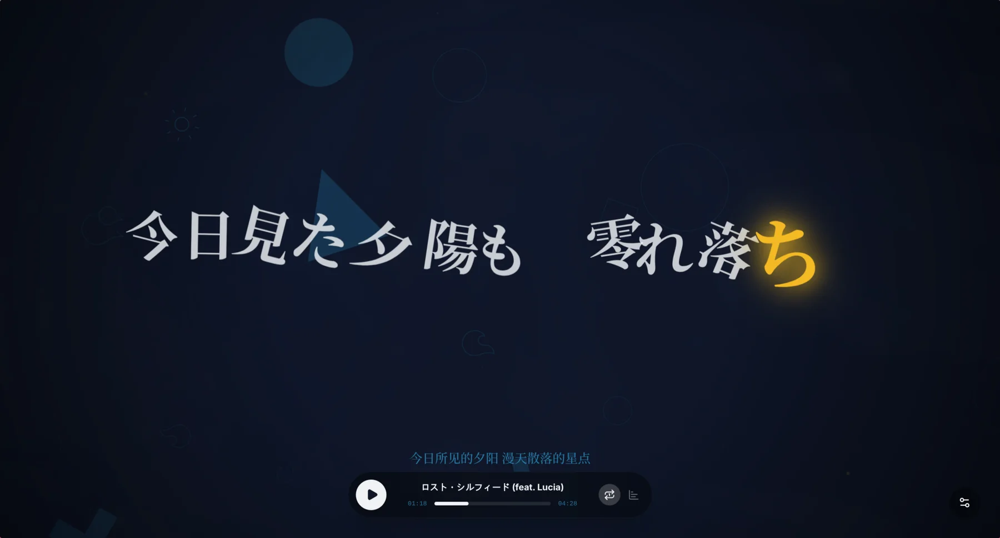
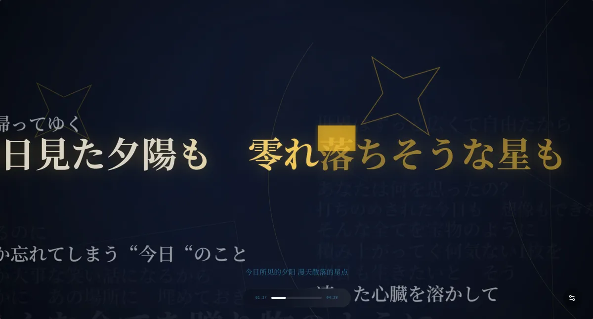
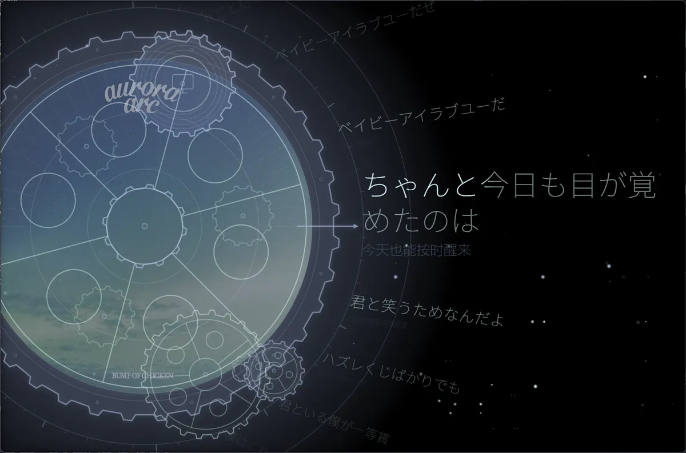

Windows 桌面版 · lx39 构建
歌词可视化播放器。这一份是本人自用的构建，由 chthollyphile/folia-major fork 而来，加了几个自己需要的东西。它不是官方版本，也不代表原作者。
与官方的差别
其余功能都来自上游。界面上你看到的绝大多数东西是官方做的，包括那个窄屏一体胶囊——它不是我们写的。
把洛雪的自建源接进来做聚合搜索与播放：网易云、QQ、酷狗、酷我、咪咕、汽水，六家一起查，只挑能播的那条。这也是目前比官方多出来的主要一块。
播放器界面与设置页的一层玻璃质感：模糊、色散、亮度可调，能跟着封面色走。属于外观层，不影响播放逻辑。
把正在播的歌通过 DLNA 丢给电视或音箱，同时在电脑上留一个遥控面板：播放、暂停、切歌、调音量，不用掏手机。
逐字点亮的文字 PV 展示方式，以及黑胶、跳一跳、52Hz、虹光几套内置样式——官方样式之外补的那部分。
音质改成六档可选，从省流量到高解析，按当前音源实际能给到的上限挑，不做无意义的档位。
连自己家里的飞牛 NAS 听歌：登录后直接拿封面、列表和播放地址，走的是自家局域网，不经过第三方。
界面样貌


界限
这一版把上游的代码同步下来用，只在上面叠自己的东西。所以两边的账要分清。
安装
# 常规安装，装完直接打开 Folia-Setup-0.7.28.exe # 静默安装到默认目录 Folia-Setup-0.7.28.exe /S
装完会覆盖旧版本，歌单和设置保留在原来的用户目录里。这个包我只在自己的机器上装过并跑通，别人的环境没有逐一验证。